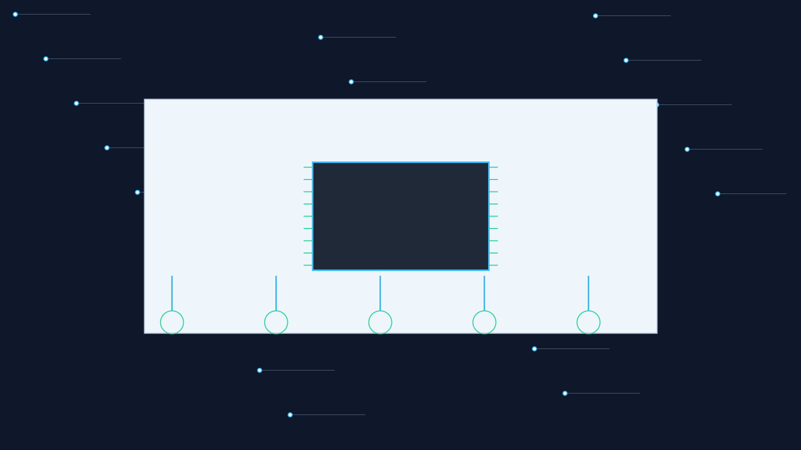

只展示项目，不公开源码仓库
本站用于帮助访客快速判断项目方向和内容范围。每个项目对应独立资料包或私有仓库，确认后再提供源码、文档、原理图、演示资料等内容。

本站用于帮助访客快速判断项目方向和内容范围。每个项目对应独立资料包或私有仓库，确认后再提供源码、文档、原理图、演示资料等内容。
项目覆盖环境监测、智能家居、农业物联网、安防门禁、健康监测、电机控制、数据采集与通信等常见选题方向。
按方向筛选项目，也可以输入项目编号、关键词、模块名称快速搜索。
不同项目内容会有差异，具体以确认后的项目资料清单为准。
STM32、单片机、ESP8266、APP、上位机等工程文件。
功能介绍、模块设计、系统框图、流程图和调试说明。
原理图、接线说明、模块清单、部分项目 PCB 或仿真资料。
课程设计报告、论文结构、运行截图或演示说明。
为避免源码被公开搬运或误用，公开网站不放置真实源码仓库地址和资料下载链接。需要完整物料时，请提供项目编号或项目名称确认。
咨询时建议直接发送项目编号、项目名称和需要的物料范围，便于快速确认。
项目编号格式：P001 / P026 / P173
联系方式：微信、邮箱或表单链接可放在此处
说明：资料仅用于学习参考，请结合课程要求理解和二次开发。